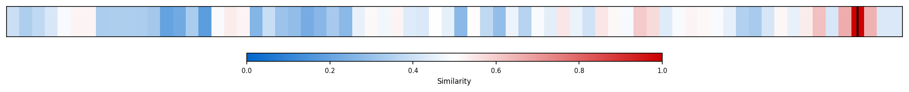
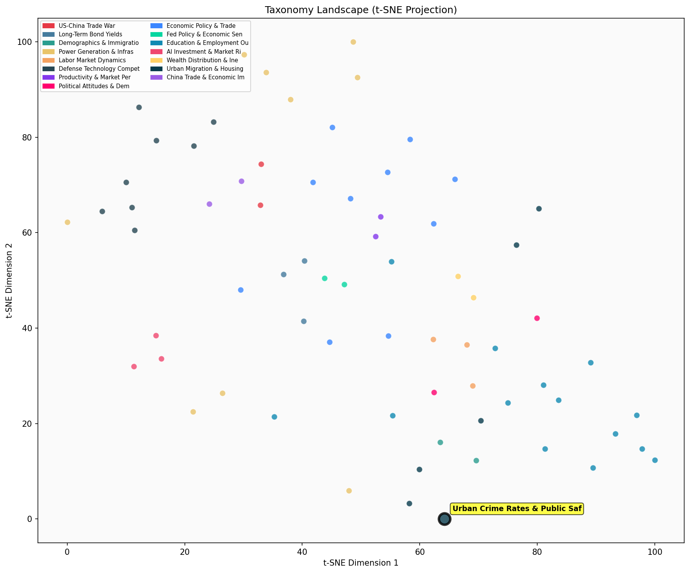

Description
This subcluster examines urban crime patterns, public safety metrics, and law enforcement trends within metropolitan contexts. Articles analyze violent crime statistics, incarceration rates, juvenile offenses, and emerging public disorder phenomena like fare evasion and quality-of-life violations. Common data sources include FBI crime reports, victimization surveys, and municipal police statistics, often presenting conflicting narratives about whether urban safety is improving or deteriorating. Unlike sibling subclusters focused on housing markets or demographic shifts, this collection specifically addresses criminal justice outcomes and their measurement challenges, exploring how traditional crime metrics may inadequately capture evolving urban safety concerns.
Similarity to All 70 Subclusters
Each cell represents a subcluster. Color intensity shows similarity (blue=low, red=high). Black line marks current subcluster position.
Relationship to Primary Clusters
Average similarity to each of the 15 primary clusters. Larger area = stronger relationship to that cluster.
Taxonomy Landscape
All 70 subclusters positioned by similarity (t-SNE). Current subcluster highlighted with label. Click to enlarge.
Network Connections
Current subcluster at center, connected to related subclusters. Line thickness = similarity strength.
Most Representative Articles
-
1. Murder Rate In 2021, 6.9 per 100,000 Highest Since 1996 7.4 per 100,000.
-
2. The US murder rate remains elevated, with 20,000 murders in 2020, a 25% increase Y/Y, according to p
-
3. Two percent of US counties account for half of America’s homicides.
-
4. The uptick in violent crime associated with the pandemic is receding but homicide rates remain above
-
5. Btw 2019 and 2020, the murder rate surged by 30%, with black Americans experiencing a disproportiona
Edge Cases (Boundary Articles)
-
1. Crime statistics miss the rise in public disorder, which @CharlesFLehman describes as the "dominatioThis article is borderline because while it discusses public safety and policing strategies in urban contexts, it focuses primarily on non-traditional crime metrics (public disorder, homelessness, litter) rather than the conventional crime statistics and law enforcement trends that define the cluster's core content. The article's emphasis on resource allocation and policing strategies also overlaps with management and performance analysis themes, making it conceptually distant from typical urban crime rate discussions.
-
2. Big Data can help identify potential mass killers by detecting patterns of dangerous behavior. UpdatThis article is borderline for the "Urban Crime Rates & Public Safety Trends" cluster because while it addresses public safety concerns, it focuses on predictive technology and policy solutions for mass violence rather than analyzing urban crime statistics, patterns, or law enforcement trends within metropolitan areas. The content is more about preventive intervention systems and legal frameworks than the empirical crime data and urban-specific safety metrics that define the cluster's core focus.
-
3. Having a criminal parent jailed reduces children’s likelihood of incarceration by 4.9pp.This article is borderline because while it deals with incarceration rates (relevant to urban crime trends), its primary focus is on family dynamics and intergenerational effects of criminal justice involvement on children's developmental outcomes, which aligns more closely with educational and childhood intervention research than urban crime pattern analysis.
Original Dendrogram